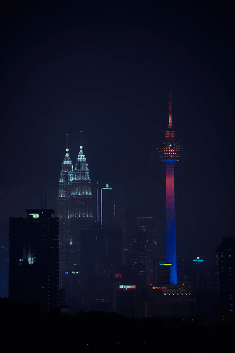
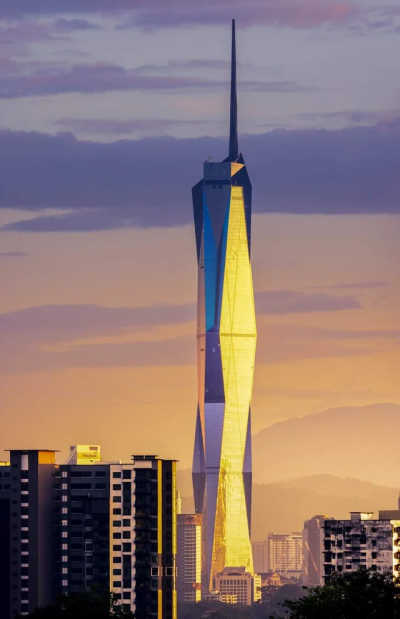

This is the busy city of Kuala Lumpur!
Petronas Twin Towers and KL Tower
'Merdeka 118
Kuala Lumpur is Malaysia's capital city. It is home to many malls, attractions and historical sights and skyscrappers. Kuala Lumpur is most famous for the Petronas Twin Towers, KL Tower, as well as then newly build Merdeka 118.These towers all ranked on the tallest skyscrappers in world for many years, Merdeka 118 being the most recent and the tallest building in Malaysia as of 2024. Kuala Lumpur is one of the most technologically advanced cities in Malaysia.